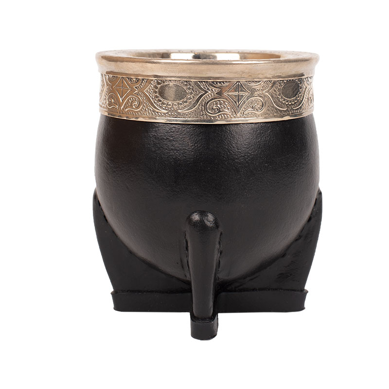
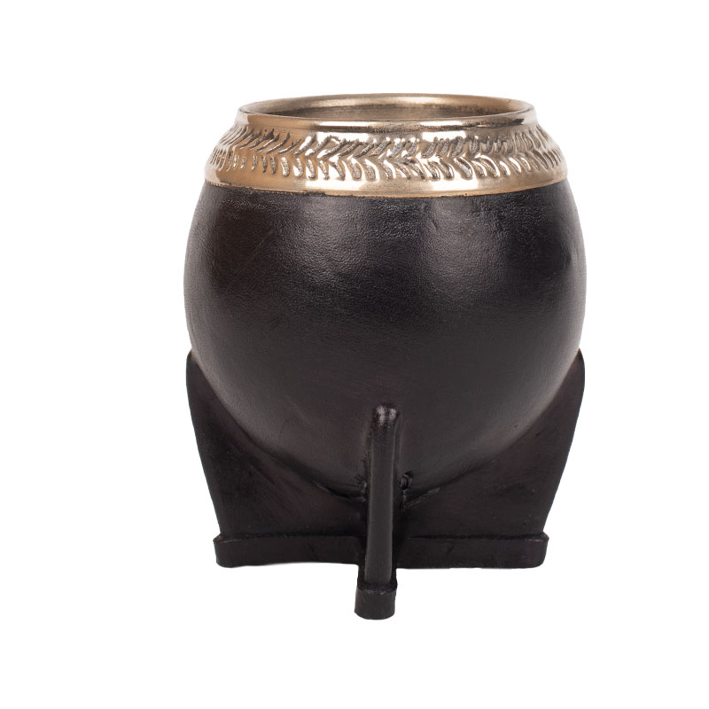
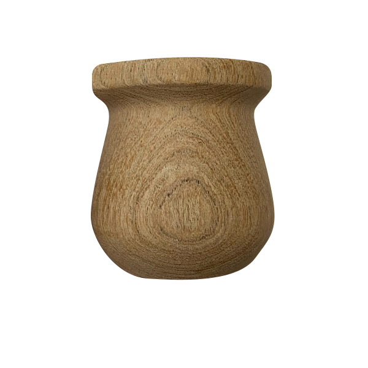

Imperial
Caracterizados por paredes de calabaza gruesas y revestimiento de cuero resistente,
con cinta estilo banda hecha de alpaca que está debajo de la virola y rodea la boca
del mate, los Imperiales son inconfundibles. Por su tamaño y capacidad, son los
anfitriones de interminables juntadas con amigos con mates de por medio.

Tenemos disponibilidad!
Camionero
El mate camionero recibe su denominación, por ser un mate muy utilizado por los conductores
ya que es ideal para distintos terrenos. Por su corte en la calabaza es de boca ancha, que
sirve de protección ante posibles derrames de la infusión, y permite un cebado más cómodo

Tenemos disponibilidad!
Torpedo
Sencillo y armonioso. El corte justo en el cuello de la calabaza, garantiza una mejor conservación
de la temperatura y requiere de un cebado preciso. Al ser más cerrado, es de un agarre suave, se
adapta a todas las manos. Su figura redondeada lo hace un mate cómodo para llevar.

Tenemos disponibilidad!
Bocón
Mate con sabor a galletitas 9 de oro y al resto de las don satur de la tarde

Tenemos disponibilidad!